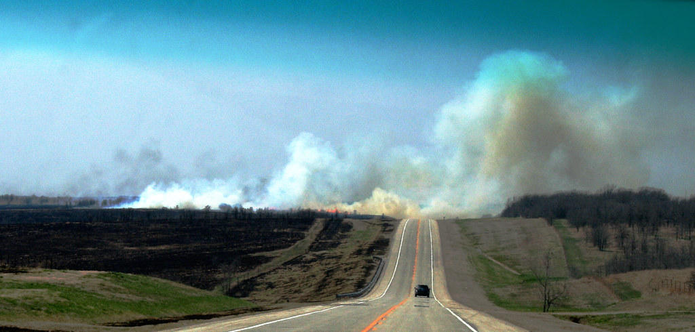

The World Health Organisation (WHO) calls climate change "the greatest threat to global health in the 21st century". This is because climate change has given us so many more problems in our world instead of solutions. For example, climate change has created more diseases for us to deal with. One of those recent diseases is Covid 19, which has resulted in over 6.4 million deaths worldwide and continues to threaten our world to this day.

Another effect of climate change is the increase in natural disasters and a change in our weather that have happened recently. Professor Petteri Taalas, the Secretary-General of the World Meteorological Organisation (WMO), says that "the number of weather, climate and water extremes are increasing and will become more frequent and severe in many parts of the world as a result of climate change."